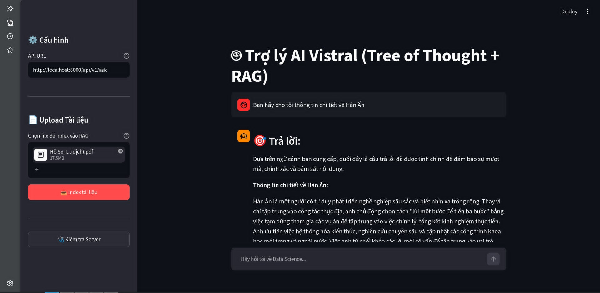
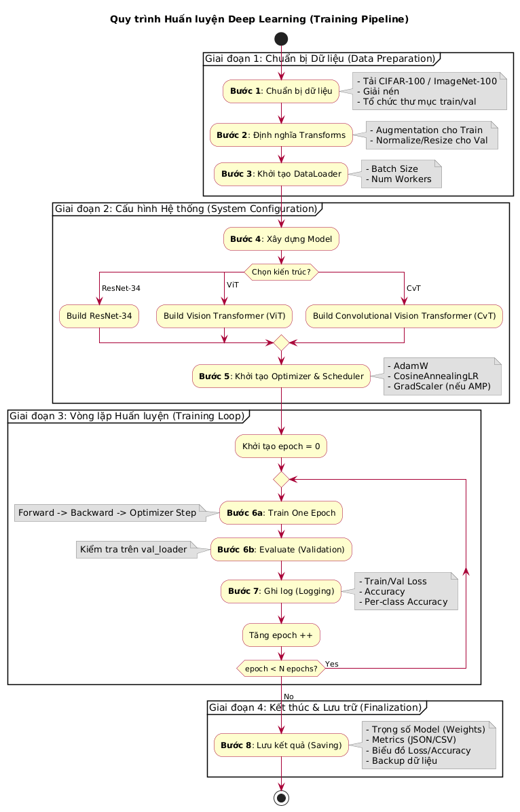
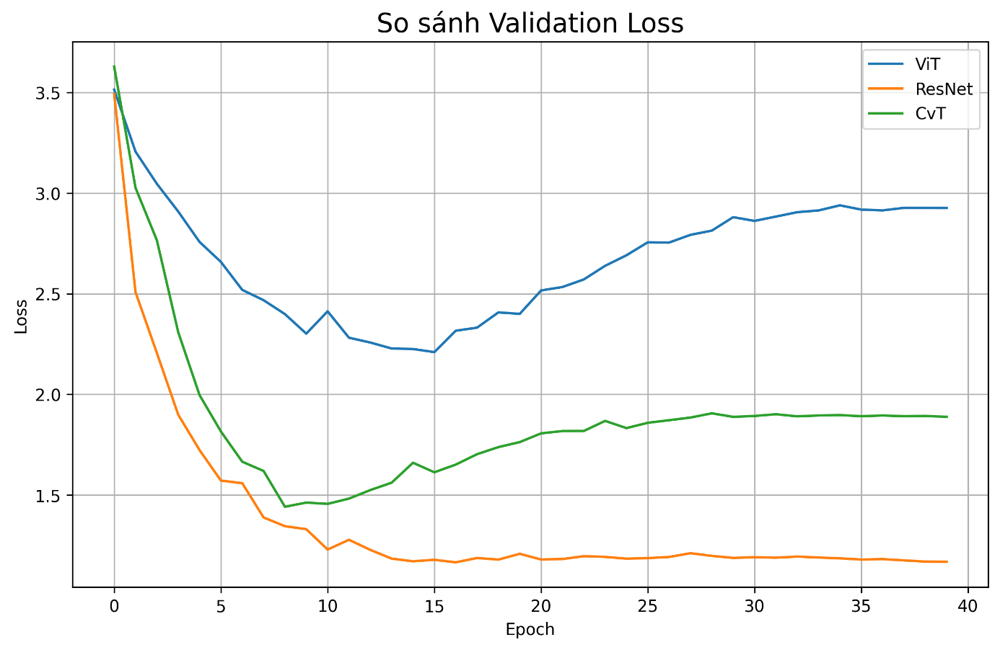
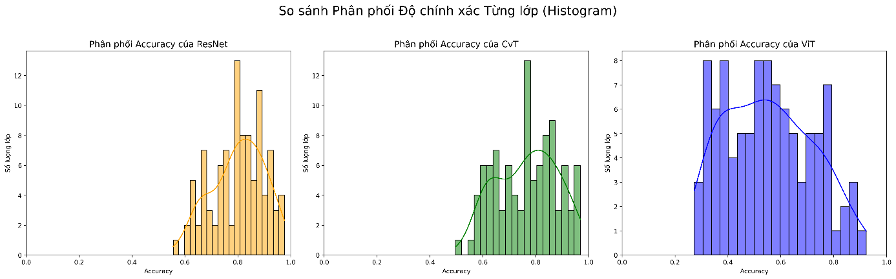

Dự Án Nổi Bật
5-Class Bird Species Classification
2023Dự án phân loại 5 giống chim sử dụng các kỹ thuật trích xuất đặc trưng truyền thống kết hợp với Machine Learning.
- Xây dựng pipeline tiền xử lý ảnh: HOG, LBP, HSV và data augmentation.
- Huấn luyện và tinh chỉnh mô hình XGBoost.
- Đạt độ chính xác (Accuracy) 88-90% trên tập test.
Giao diện Dự đoán (Web UI)

Log Terminal Train Mô hình

RAG Chatbot với GraphRAG
2026Trợ lý AI ứng dụng cấu trúc GraphRAG kết hợp Tree-of-Thought để tăng cường khả năng suy luận và giảm thiểu ảo giác (hallucination).
- Sử dụng ChromaDB và LangChain để tìm kiếm ngữ cảnh.
- Tích hợp luật tự phản chiếu (self-reflection rules) qua Tree-of-Thought.
- Backend mạnh mẽ và độ trễ thấp với FastAPI.
Giao diện Trợ lý AI (Streamlit UI)

Không tìm thấy file ảnh image_735339.jpgMultimodal Zero-Shot Image Classification (CLIP)
2026Phát triển kiến trúc học đa phương thức sử dụng Contrastive Learning cho tác vụ phân loại ảnh Zero-shot.
- Tinh chỉnh pipeline trên COCO 2017 với AMP (tối ưu cho 4GB VRAM).
- Thử nghiệm thay đổi Encoder (ResNeXt, BERT, PhoBERT) cho văn bản tiếng Việt.
- Đạt 44.26% Zero-shot accuracy.
Hình ảnh minh họa dự án


Nghiên cứu & Huấn luyện Kiến trúc Lai CNN-Transformer (CvT)
2025Nghiên cứu phương pháp tích hợp thiên kiến quy nạp (local inductive bias) của CNN vào cơ chế tự chú ý (self-attention) toàn cục của Vision Transformer (ViT). Huấn luyện từ đầu (from scratch) các mô hình trên PyTorch để so sánh hiệu năng trích xuất đặc trưng và khả năng tổng quát hóa.
- Xây dựng quy trình tự động: Triển khai pipeline huấn luyện tối ưu trên Google Colab Pro+ (GPU NVIDIA L4), tích hợp mixed-precision (AMP), Cosine Annealing LR và cơ chế Experiment Tracking/Checkpointing qua Google Drive.
- Chứng minh thực nghiệm: Việc đưa lớp tích chập vào token embedding và cơ chế attention (CvT two-stage) giúp tăng độ chính xác trên CIFAR-100 vượt trội từ 48% (ViT thuần) lên 60%.
- Hiệu quả tham số vượt trội: Trên tập ImageNet-100, mô hình lai CvT-13 đạt độ chính xác 76-77% (tiệm cận mức 80% của ResNet-34) nhưng sử dụng ít hơn 30% tham số (14.97M so với 21.34M của ResNet-34).
- Phân tích sâu Overfitting: Sử dụng các biểu đồ Loss/Accuracy và phân phối độ chính xác từng lớp (Per-class Accuracy Histogram) để làm rõ hiện tượng overfitting của ViT thuần trên dữ liệu nhỏ và cách CvT khắc phục bằng cấu trúc lai đa tầng.
Hình ảnh minh họa khuyến nghị từ Báo cáo thực tập
Ảnh 1: Sơ đồ tổng quát Pipeline thực nghiệm Deep Learning (Hình 5 trong Báo cáo)

Ảnh 1: Sơ đồ Pipeline thực nghiệm (Hình 5 trong báo cáo)Ảnh 2: Biểu đồ so sánh Validation Loss - Chứng minh hiện tượng Overfitting của ViT (Biểu đồ 7 trong Báo cáo)

Ảnh 2: Biểu đồ so sánh Validation Loss (Biểu đồ 7 trong báo cáo)Ảnh 3: Biểu đồ Histogram phân phối độ chính xác từng lớp trên ImageNet-100 (Hình 7 trong Báo cáo)

Ảnh 3: Histogram Per-class Accuracy trên ImageNet-100 (Hình 7 trong báo cáo)Pollution Level Prediction System
2023Hệ thống dự đoán mức độ ô nhiễm không khí End-to-End dựa trên dữ liệu cảm biến liên tục.
- Xây dựng luồng tự động thu thập, làm sạch và chuẩn hóa dữ liệu.
- Huấn luyện Random Forest đạt 92.2% precision trong việc nhận diện mốc ô nhiễm.
Hình ảnh minh họa dự án